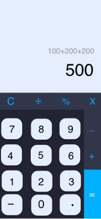

16 Proyek Kalkulator
Proyek Kalkulator
Aplikasi Kalkulator adalah proyek Flutter yang bertujuan untuk membuat sebuah kalkulator fungsional yang dapat digunakan untuk melakukan operasi matematika dasar. Aplikasi ini akan menyediakan antarmuka pengguna yang intuitif dan responsif untuk memudahkan pengguna dalam melakukan perhitungan.
16.1 Fitur Utama
- Tampilan Antarmuka Pengguna:
- Aplikasi akan memiliki tampilan antarmuka pengguna yang terdiri dari tombol-tombol angka, operator, dan fungsi matematika seperti tambah, kurang, kali, bagi, dan sebagainya.
- Tampilan akan dirancang agar mudah digunakan dan memberikan pengalaman pengguna yang intuitif.
- Perhitungan Matematika:
- Pengguna dapat melakukan perhitungan matematika dasar seperti penjumlahan, pengurangan, perkalian, dan pembagian.
- Aplikasi akan memiliki logika yang memungkinkan pengguna melakukan perhitungan secara berurutan, menggabungkan beberapa operasi, dan menghasilkan hasil yang akurat.
- Desain Responsif:
- Aplikasi akan memiliki desain yang responsif dan bisa diakses dengan baik di berbagai perangkat dengan ukuran layar yang berbeda.
16.2 Teknologi yang Digunakan
- Flutter sebagai kerangka kerja untuk pengembangan aplikasi mobile lintas platform.
- Dart sebagai bahasa pemrograman untuk mengembangkan logika aplikasi.
- Widget dan State Management dari Flutter untuk mengatur tampilan dan interaksi pengguna.
- Matematika dasar menggunakan operator dan fungsi bawaan dari Dart.
Tujuan dari proyek ini adalah memberikan pengguna sebuah kalkulator yang dapat digunakan dengan mudah, memiliki performa yang baik, dan memberikan hasil perhitungan yang akurat. Aplikasi Kalkulator ini akan menjadi alat yang berguna untuk keperluan perhitungan sehari-hari, baik untuk kebutuhan pribadi maupun profesional.
Selama mengembangkan aplikasi Kalkulator, penting untuk memastikan bahwa logika perhitungan matematika benar, antarmuka pengguna responsif dan intuitif, serta mengikuti pedoman desain terbaik dari Flutter.
16.3 Contoh tampilan aplikasi
Aplikasi kalkulator hanya memiliki satu halaman saja dengan tampilan kurang lebih seperti di bawah ini.

16.4 Langkah Pembuatan Aplikasi aplikasi
- Persiapan Awal
- Pastikan Komputer Anda masih terinstal Flutter dan Dart.
- Buat proyek baru menggunakan perintah flutter create nama_proyek.
- Pastikan Anda telah membuat file ‘custom_button.dart’ dan ‘custom_number_button.dart’ untuk tombol yang akan digunakan
- Desain Tampilan Antarmuka
- Buka file ‘lib/main.dart’ dan rancang tampilan kalkulator menggunakan widget seperti ‘Column’, ‘Row’, atau ‘FlatButton’ untuk tombol-tombol angka, operator, dan fungsi matematika.
- Dalam hal ini gunakan Scaffold dengan AppBar untuk memasukkan widget kita.
- Sesuaikan gaya dan desain tampilan sesuai dengan contoh yang Anda berikan.
- ‘MaterialApp’ digunakan untuk mengatur tema aplikasi dan menentukan halaman utama (MyHomePage).
- Logika Perhitungan
- Buat kelas atau fungsi yang mengelola logika perhitungan matematika.
- Anda bisa menggunakan variabel untuk menyimpan angka-angka dan operator yang dimasukkan oleh pengguna.
- Buat fungsi-fungsi untuk menjalankan operasi matematika seperti penjumlahan, pengurangan, perkalian, dan pembagian.
- Pada bagian _MyHomePageState, telah ditentukan beberapa metode yang mengatur logika perhitungan. Metode ini akan memproses input dari tombol-tombol yang ditekan oleh pengguna dan memperbarui tampilan sesuai.
- Interaksi Pengguna
- Hubungkan tombol-tombol dengan logika perhitungan yang telah Anda buat.
- Ketika pengguna menekan tombol angka atau operator, perbarui tampilan dan logika perhitungan sesuai.
- Tombol operasi dan angka dengan menggunakan widget CustomOperationButton dan CustomNumberButton. Implementasi widget-widget ini dalam file yang telah dibuat dalam file external (‘custom_button.dart’ dan ‘custom_number_button.dart’).
- Menampilkan Hasil
- Buat widget untuk menampilkan hasil perhitungan.
- Ketika pengguna menekan tombol “=” atau selesai menginput operasi, tampilkan hasil perhitungan pada widget ini.
- Pada tampilan, gunakan Text widget untuk menampilkan field1, operator, dan field2. Ini adalah hasil dari logika perhitungan yang telah di definisikan sebelumnya.
- Gunakan widget Column, Row, dan GridView untuk mengatur tata letak tombol-tombol. Atur properti seperti crossAxisCount dan shrinkWrap sesuai kebutuhan.
- Setiap kali tombol operasi atau angka ditekan, aplikasi memanggil metode yang telah di tentukan sebelumnya. Misalnya, saat tombol “1” ditekan, Anda memanggil inputField(“1”).
- ‘setState’ untuk memperbarui state ketika ada perubahan dalam logika perhitungan atau tampilan.
- Jalankan Aplikasi
- Pada main function, jalankan aplikasi dengan runApp(MyApp()).
- Testing dan Debugging
- Uji aplikasi secara menyeluruh untuk memastikan semua operasi matematika berjalan dengan benar sesuai alur logika pada aplikasi kalkulator yang anda dibuat